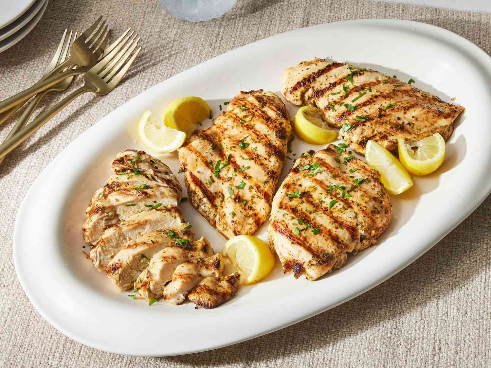

Home
Grilled Chicken

Description
Juicy on the inside with a crisp, savory char on the outside, this classic Grilled Chicken is an essential staple
for every home kitchen. Marinated with fresh garlic, fragrant herbs, olive oil, and a splash of lemon, it
delivers maximum flavor with minimal prep. Whether you are using an outdoor grill, a stovetop grill pan, or an
oven broiler, this recipe guarantees tender, never-dry chicken that works equally well for high-protein meal
prep, fresh summer salads, or a quick weeknight family dinner.
Ingredients
- Chicken: 500 g (boneless breasts or thighs)
- Olive oil: 2 tbsp
- Lemon juice: 1 to 2 tbsp
- Garlic: 1 tbsp (minced or paste)
- Dried mixed herbs (or oregano): 1 tsp
- Paprika or red chili flakes: ½ to 1 tsp (for color and mild kick)
- Black pepper: ½ tsp (freshly crushed)
- Salt: to taste
Steps :
- Marinate the chicken: In a bowl, combine the olive oil, lemon juice, minced garlic, dried herbs, paprika,
black pepper, and salt. Add the chicken pieces and rub the marinade all over until evenly coated. Let it
rest for 20 to 30 minutes.
- Preheat the pan or grill: Heat a grill pan, heavy skillet, or outdoor grill over medium-high heat. Lightly
brush the surface with a few drops of oil.
-
Grill without moving: Place the chicken onto the hot grill. Cook undisturbed for 5 to 6 minutes on the first
side until deep golden grill marks form.
- Flip and cook through: Flip the chicken over and cook the other side for another 5 to 6 minutes (or until
the internal temperature reaches 75°C / 165°F and the juices run clear).
- Rest and serve: Transfer the grilled chicken to a plate or cutting board and let it rest for 5 minutes to
keep the juices locked in before slicing.